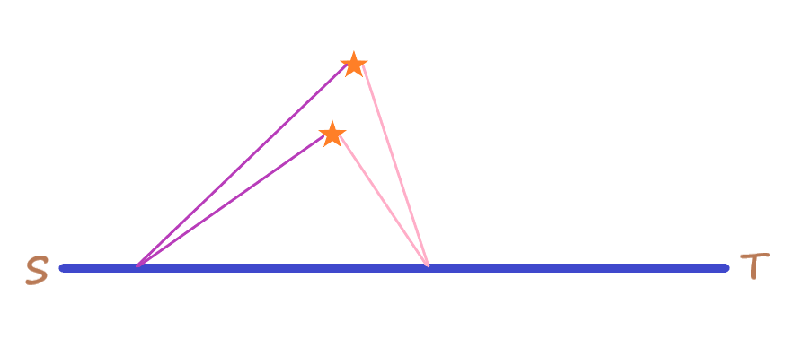
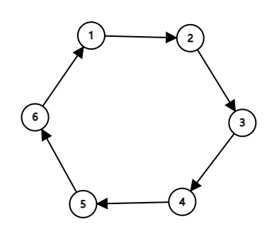
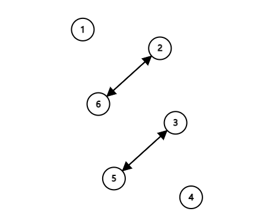

C. Cities 题意 有一个长度为$n$的序列，可以选择一段连续且数字相同的序列改整体改变为其它数字，问最少多少次操作可以将整个序列变得相同。
思路 挺显然的区间$DP$。
首先对序列$a$去重，即将连续且相同的序列长度变为$1$即可，现在的序列$a$肯定是相邻之间不相同。
如果去重后的序列$a$两两不相同，那答案就是序列的长度。
如果有相同的，如何减少操作次数？
如果$a[l] == a[r]$，那么可以让区间$[l, r]$变成和$a[l]$一样的，这样就减少了一次操作，所以这一题可以从两边端点一样的区间入手减少操作次数。
令$dp[l][r]$表示将区间$[l, r]$变成一样的最少操作次数，$pre[i]$表示左边上一次出现$a[i]$的位置。
状态转移方程：
用$dp[l + 1][r] + 1$和$dp[l][r - 1] + 1$更新
如果$a[l] == a[r]$，可以用$dp[l + 1][r - 1] + 1$更新
对于区间$[l + 1, r - 1]$中的位置$k$， 如果满足$a[k] == a[r]$，则可以用$dp[l][k - 1] + dp[k][r] + 1$更新
对于区间$[l + 1, r - 1]$中的位置$k$， 如果满足$a[l] == a[k] == a[r]$，则可以用$dp[l][k - 1] + dp[k + 1][r]$更新
最后的答案就是$dp[1][n]$。
Code 1 2 3 4 5 6 7 8 9 10 11 12 13 14 15 16 17 18 19 20 21 22 23 24 25 26 27 28 29 30 31 32 33 34 35 36 37 38 39 40 41 42 43 44 45 46 47 48 49 #include <bits/stdc++.h> using namespace std;const int maxn = 5e3 + 10 ;int n;int a[maxn], pre[maxn];int dp[maxn][maxn];int dfs (int l, int r) if (l >= r) return 0 ; if (dp[l][r] != -1 ) return dp[l][r]; int ans = (r - l + 1 ) - 1 ; ans = min (ans, dfs (l + 1 , r) + 1 ); ans = min (ans, dfs (l, r - 1 ) + 1 ); if (a[l] == a[r]) ans = min (ans, dfs (l + 1 , r - 1 ) + 1 ); for (int k = pre[r]; k > l; k = pre[k]) { ans = min (ans, dfs (l, k - 1 ) + dfs (k, r) + 1 ); if (a[l] == a[r]) ans = min (ans, dfs (l, k - 1 ) + dfs (k + 1 , r)); } dp[l][r] = ans; return ans; } void slove () cin >> n; map<int , int > pos; for (int i = 1 ; i <= n; i++) { cin >> a[i]; if (a[i] == a[i - 1 ]) { i--, n--; continue ; } pre[i] = pos[a[i]]; pos[a[i]] = i; } for (int i = 1 ; i <= n; i++) for (int j = 1 ; j <= n; j++) dp[i][j] = -1 ; cout << dfs (1 , n) << '\n' ; } int main () ios::sync_with_stdio (0 ); int T; cin >> T; while (T--) slove (); return 0 ; }
H. Hard Calculation 题意 昆明区域赛每一年都会举办，第一年是2021年，问第x届在哪一年举办。
思路 输出$2020 + x$即可
Code 1 2 3 4 5 6 7 8 9 #include <bits/stdc++.h> using namespace std;int main () int x; cin >> x; cout << x + 2020 << '\n' ; return 0 ; }
I. Mr.main and Windmills 题意 有一个从$s$点到$t$点的火车，沿途的某一边有很多风车，当火车在不同位置观察风车时，某两个风车的左右位置可能会发生变化，问第$h$个风车发生$k$次相对变化时火车在哪个位置。

思路 对于风车$i$，记录下与其他风车连成的直线与线段$s -> t$的交点，并且对这些交点从近到远排序即可。
Code 1 2 3 4 5 6 7 8 9 10 11 12 13 14 15 16 17 18 19 20 21 22 23 24 25 26 27 28 29 30 31 32 33 34 35 36 37 38 39 40 41 42 43 44 45 46 47 48 49 50 51 52 53 54 55 56 57 58 59 60 61 62 #include <bits/stdc++.h> using namespace std;const int maxn = 1005 ;struct pt { double x, y; pt () {} pt (double a, double b) : x (a), y (b) {} pt operator +(pt p) {return pt (x + p.x, y + p.y);} pt operator -(pt p) {return pt (x - p.x, y - p.y);} pt operator *(double v) {return pt (x * v, y * v);} pt operator /(double v) {return pt (x / v, y / v);} double operator *(pt p) {return x * p.x + y * p.y;} double operator ^(pt p) {return x * p.y - y * p.x;} double corss (pt a, pt b) return (a - *this ) ^ (b - *this );} double dot (pt a, pt b) return (a - *this ) * (b - *this );} double getlen () return x * x + y * y;} }; struct ln { pt p, q; ln () {} ln (pt a, pt b) : p (a), q (b) {} pt operator *(ln o) { double h1 = p.corss (o.p, o.q); double h2 = q.corss (o.q, o.p); return (p * h2 + q * h1) / (h1 + h2); } }; int n, q;ln r; pt s[maxn]; vector<pt> ans[maxn]; bool cmp (pt a, pt b) return (a - r.p).getlen () < (b - r.p).getlen (); } int main () scanf ("%d%d" , &n, &q); scanf ("%lf%lf%lf%lf" , &r.p.x, &r.p.y, &r.q.x, &r.q.y); for (int i = 1 ; i <= n; i++) { scanf ("%lf%lf" , &s[i].x, &s[i].y); } for (int i = 1 ; i <= n; i++) { for (int j = 1 ; j <= n; j++) { if (i == j) continue ; pt c = ln (s[i], s[j]) * r; if (c.dot (r.p, r.q) < 0 ) ans[i].push_back (c); } sort (ans[i].begin (), ans[i].end (), cmp); } while (q--) { int h, k; scanf ("%d%d" , &h, &k); if (k > (int )ans[h].size ()) printf ("-1\n" ); else printf ("%.12lf %.12lf\n" , ans[h][k - 1 ].x, ans[h][k - 1 ].y); } return 0 ; }
J. Parallel Sort 题意 有一个$n$的排列，每一轮可以选任意多对数字进行交换，且每一轮每一个数字只能被选择一次，问最少需要多少轮操作可以将这个排列变成升序的。
思路 如果$p[i] != i$，即该数字不在它该在的位置时，必然存在环，且每一个环都是独立的，可以在同一轮对所有环进行操作，互不影响。
考虑将$i->p[i]$连边，比如序列$[2, 3, 4, 5, 6, 1]$所构成的的环如下：

考虑交换$[1, 2], [3, 6], [4, 5]$将数列变成$[1, 6, 5, 4, 3, 2]$，则环变成：

发现大环被拆成若干个二元环，则再进行一次交换就可以完全复原。
Code 1 2 3 4 5 6 7 8 9 10 11 12 13 14 15 16 17 18 19 20 21 22 23 24 25 26 27 28 29 30 31 32 33 34 35 36 37 38 39 40 41 42 43 44 45 46 47 #include <bits/stdc++.h> using namespace std;const int maxn = 1e5 + 10 ;int n;int p[maxn], vis[maxn];vector<pair<int , int >> slove () { memset (vis, 0 , sizeof vector<pair<int , int >> res; for (int i = 1 ; i <= n; i++) { if (vis[i] || p[i] == i) continue ; vector<int > v; int tmpv = i; while (!vis[tmpv]) { v.push_back (tmpv); vis[tmpv] = 1 ; tmpv = p[tmpv]; } int sz = (int )v.size (); for (int l = 0 , r = sz - 1 ; l < r; l++, r--) { res.push_back ({v[l], v[r]}); swap (p[v[l]], p[v[r]]); } } return res; } int main () ios::sync_with_stdio (0 ); cin >> n; for (int i = 1 ; i <= n; i++) cin >> p[i]; vector<vector<pair<int , int >>> ans; while (1 ) { vector<pair<int , int >> res = slove (); if (res.empty ()) break ; ans.push_back (res); } cout << (int )ans.size () << '\n' ; for (auto v : ans) { cout << (int )v.size (); for (auto vv : v) cout << " " << vv.first << ' ' << vv.second; cout << '\n' ; } return 0 ; }
K. Riichi!! 题意 麻将题，Riichi!!
思路 模拟
Code 1 2 3 4 5 6 7 8 9 10 11 12 13 14 15 16 17 18 19 20 21 22 23 24 25 26 27 28 29 30 31 32 33 34 35 36 37 38 39 40 41 42 43 44 45 46 47 48 49 50 51 52 53 54 55 56 57 58 59 60 61 62 63 64 65 66 67 68 69 70 71 72 73 74 75 76 77 78 79 80 81 82 83 84 85 86 87 88 89 90 91 92 93 94 95 96 97 98 99 100 101 102 103 104 105 106 107 108 109 #include <bits/stdc++.h> using namespace std;int cnt[40 ];string str; int ok;vector<int > riichi; vector<vector<int >> discard; void check (int cur, int rem) if (rem < 0 ) return ; if (rem == 0 ) { ok = 1 ; return ; } if (ok) return ; if (!cnt[cur]) check (cur + 1 , rem); if (cnt[cur] >= 3 ) { cnt[cur] -= 3 ; check (cur, rem - 3 ); cnt[cur] += 3 ; } if (rem % 3 == 2 && cnt[cur] >= 2 ) { cnt[cur] -= 2 ; check (cur, rem - 2 ); cnt[cur] += 2 ; } if (cur <= 27 && cur % 9 != 0 && cur % 9 != 8 && cnt[cur] && cnt[cur + 1 ] && cnt[cur + 2 ]) { --cnt[cur], --cnt[cur + 1 ], --cnt[cur + 2 ]; check (cur, rem - 3 ); ++cnt[cur], ++cnt[cur + 1 ], ++cnt[cur + 2 ]; } } string get_str (int x) { string s = "" ; if (x <= 9 ) { s = "w" ; s = (char )(x + '0' ) + s; } else if (x <= 18 ) { s = "b" ; s = (char )(x - 9 + '0' ) + s; } else if (x <= 27 ) { s = "s" ; s = (char )(x - 18 + '0' ) + s; } else { s = 'z' ; s = (char )(x - 27 + '0' ) + s; } return s; } int main () ios::sync_with_stdio (0 ); int T; cin >> T; while (T--) { memset (cnt, 0 , sizeof cin >> str; for (int i = 0 ; i < 28 ; i += 2 ) { if (str[i + 1 ] == 'w' ) ++cnt[str[i] - '0' ]; else if (str[i + 1 ] == 'b' ) ++cnt[str[i] - '0' + 9 ]; else if (str[i + 1 ] == 's' ) ++cnt[str[i] - '0' + 18 ]; else ++cnt[str[i] - '0' + 27 ]; } ok = 0 ; check (1 , 14 ); if (ok) { cout << "Tsumo!\n" ; continue ; } riichi.clear (); discard.clear (); for (int i = 1 ; i <= 34 ; ++i) { if (cnt[i]) { --cnt[i]; vector<int > tmp; for (int j = 1 ; j <= 34 ; ++j) { if (i == j) continue ; ++cnt[j]; ok = 0 ; check (1 , 14 ); if (ok) { tmp.push_back (j); } cnt[j]--; } if (!tmp.empty ()) { riichi.push_back (i); discard.push_back (tmp); } ++cnt[i]; } } cout << (int )riichi.size () << '\n' ; for (int i = 0 ; i < (int )riichi.size (); ++i) { cout << get_str (riichi[i]) << ' ' ; for (int j = 0 ; j < (int )discard[i].size (); ++j) cout << get_str (discard[i][j]); cout << '\n' ; } } return 0 ; }
L. Simone and graph coloring 题意 有一个长度为$n$的排列，对于每一对逆序对，都会有一条无向边相连，现在要为每一个点染色，相邻的点颜色不能相同，问最少需要多少种颜色，并且输出每个点的染色情况。
思路 很显然，最少需要的颜色数与最长下降子序列的长度相同。考虑从右到左进行染色，对最后面一个染颜色$1$，对第$n - 1$个数开始，找离它最近的比它小的数的下标$idx$，则$col[i] = col[idx] + 1$，如果没有比它小的数的话，则$col[i] = 1$。这一个过程与$DP$求解$LIS$时一模一样。
Code 1 2 3 4 5 6 7 8 9 10 11 12 13 14 15 16 17 18 19 20 21 22 23 24 25 26 27 28 29 30 31 32 33 34 35 36 37 38 39 40 41 42 #include <bits/stdc++.h> using namespace std;const int maxn = 1e6 + 10 ;int a[maxn];int ans[maxn];void slove () int n; scanf ("%d" , &n); for (int i = 1 ; i <= n; i++) scanf ("%d" , &a[i]); map<int , int > mp; for (int i = 1 ; i <= n; i++) mp[a[i]] = i; vector<int > seg; seg.push_back (a[n]); ans[n] = 1 ; for (int i = n - 1 ; i >= 1 ; i--) { auto pos = lower_bound (seg.begin (), seg.end (), a[i]); if (pos == seg.end ()) { ans[i] = ans[mp[seg.back ()]] + 1 ; seg.push_back (a[i]); } else { if (pos - seg.begin () == 0 ) ans[i] = 1 ; else ans[i] = ans[mp[seg[pos - seg.begin () - 1 ]]] + 1 ; seg[pos - seg.begin ()] = a[i]; } } printf ("%d\n" , (int )seg.size ()); for (int i = 1 ; i <= n; i++) { if (i > 1 ) printf (" " ); printf ("%d" , ans[i]); } printf ("\n" ); } int main () int t; scanf ("%d" , &t); while (t--) slove (); return 0 ; }
M. Stone Games 题意 给一个长度为$n$的序列，有$Q$次询问，询问给定一个区间$[L, R]$，问该区间的子集和无法组成的最小数是什么，询问强制在线。
思路
首先判断这个区间有没有$1$，没有的话就是$1$。
假设我们已知能够组成区间$[1, x]$内的所有数，区间$[L, R]$中属于$[1, x + 1]$的数的和为$sum$，则我们能够组成区间$[1, sum + 1]$内的所有数，若$sum == x$，则表明我们无法组成$x + 1$，否则就让$x = sum$，继续扩大$x$，去寻找答案。
我们需要知道区间$[L, R]$中属于区间$[x, y]$的数的和，可以用主席树来维护。
Code 1 2 3 4 5 6 7 8 9 10 11 12 13 14 15 16 17 18 19 20 21 22 23 24 25 26 27 28 29 30 31 32 33 34 35 36 37 38 39 40 41 42 43 44 45 46 47 48 49 50 51 52 53 54 55 56 57 58 59 #include <bits/stdc++.h> using namespace std;typedef long long ll;const int maxn = 1e6 + 10 ;const int inf = 1e9 + 10 ;struct Node { int l, r; ll sum; } tree[maxn * 60 ]; int n, q, tot;int rt[maxn];void update (int &x, int y, int l, int r, int v) tree[x = ++tot] = tree[y]; tree[x].sum += v; if (l == r) return ; int mid = (l + r) >> 1 ; if (v <= mid) update (tree[x].l, tree[y].l, l, mid, v); if (v > mid) update (tree[x].r, tree[y].r, mid + 1 , r, v); } ll query (int st, int ed, int l, int r, int x, int y) { if (st <= l && r <= ed) return tree[y].sum - tree[x].sum; int mid = (l + r) >> 1 ; ll res = 0 ; if (st <= mid) res += query (st, ed, l, mid, tree[x].l, tree[y].l); if (ed > mid) res += query (st, ed, mid + 1 , r, tree[x].r, tree[y].r); return res; } int main () ios::sync_with_stdio (0 ); cin >> n >> q; for (int i = 1 ; i <= n; i++) { int x; cin >> x; update (rt[i], rt[i - 1 ], 1 , inf, x); } ll ans = 0 ; while (q--) { int l, r; cin >> l >> r; l = (l + ans) % n + 1 ; r = (r + ans) % n + 1 ; if (l > r) swap (l, r); ll sum = 0 ; while (1 ) { ll tmp = query (1 , min (sum + 1 , 1ll * inf), 1 , inf, rt[l - 1 ], rt[r]); if (tmp == sum) break ; sum = tmp; } ans = sum + 1 ; cout << ans << '\n' ; } return 0 ; }